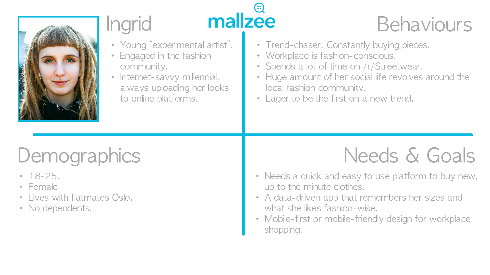
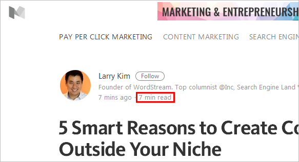
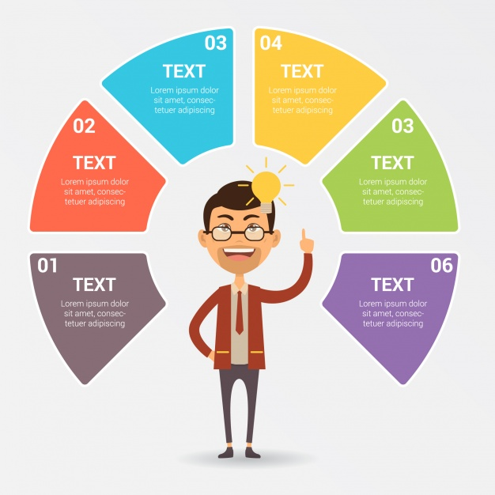

Brief
Imagine that our team wants to find out why a subset of our users are not engaging with a particular feature in the app.
We are planning to do an email survey, which has a combination of yes/no questions, some ‘agree-disagree’ questions on a scale and some ‘open-ended’ paragraph questions.
What would you recommend to the team to make sure the survey we are planning gets valid and actionable results?
How would you communicate your feedback to the team?
And how would you communicate the results of that survey to the wider business?

Baby Steps
Before rushing into putting together the survey, we've got to ask ourselves a few questions first.
- What feature do we want to ask about?
- Who do we want to ask?
- How can we get the most accurate information possible?
Given that we're being asked to enquire a specific feature, we can tick that off first.
Next - notice that not all users are avoiding this feature, just a subset.
We need to use whatever data is available to pinpoint commonalities of this "subset". Does their behaviour pertain to what types of items they buy? How long their sessions on the app are? Their location/age/ethnicity/gender?
If we can identify the generic characteristics of this subset, we can sketch out user personas as a useful guide for creating questions further in the process.

Once we have an idea of who we want to ask and what their usual behaviours are, we can start talking about creating and optimising the survey.
- Focus the questions on the smallest area possible (in our case, one feature).
- Offer an incentive for accurate survey completion.
- Minimise effort required from the user.
From first-hand experience, most people will see surveys as an imposition. Get them in and out as quickly and efficiently as possible, and give them an incentive to be as honest and constructive as possible.
Keep them rare, short, useful and give people an incentive.
Incentives can exponentially increase the number of poeple who participate in surveys, meaning that you can be more confident in your results with a larger focus group. Also, usually the only people who will willingly complete a survey are people with either extremely positive, or extremely negative views on the product, which skews results. This helps to keep things anonymous, as neutral as possible, and constructive.
Common incentives are entries into sweepstakes draws, so potentially the chance to win a Mallzee shopping spree? I'd fill in a 5 minute survey.
The Survey
Our primary aims:
- Short completion time (< 5 mins).
- Accurate, actionable results (non-leading questions).
Although in this scenario we don't have a specific example of a feature, we can build out some example questions which display good practice:
- Have you ever used this feature while shopping on Mallzee? (Yes/No)
- If not - why? (Paragraph)
- What would help you to use this feature? (Paragraph)
- How likely are you to use this feature in your next shop, now that you know it exists? (Sliding Scale)
- How useful do you personally find this feature while shopping? (Sliding Scale)
- Does this feature make your shopping experience better? (Yes/No)
Obviously these are example questions - but by covering more bases with different question types you're more likely to get a clearer picture about problems with that feature.

It could also be good to use modular surveys, which change the questions it asks based on the answers to the previous questions. This way your data tree covers a lot more ground, and potentially you can get feedback from both users familiar and unfamiliar with the particular feature in question.
There can be contingencies in place to discard unusable entries. For example, if a survey is filled in way under the average time the likelihood is that the survey has been filled in too quickly and likely contains inaccurate or sub-standard information.

As for the UX side of surveys - letting people know what they're getting themselves into before they begin. Blogs such as Medium and Adobe now give approximated reading times for articles, as well as a subtle progress metre showing how long they have to go. Transparency and clear communication with the user is likely to lead to positive feelings about the Mallzee brand, as it shows we're respectful and appreciative of their time.
They also might be more inclined to fill in more surveys at a later date.
The Results
Once the survey is complete, we need to relay information back to: both the design/product team and the wider business.
To relay to the design/product team:
For simple yes/no questions - pie/bar charts to display the feedback. Simple, clear.
For sliding scale questions - pie/bar charts, and straightforward percentages. (e.g 90% of users like X colour scheme etc.)
For paragraph questions - reading through every one and making observations on commonalities that come up. Often the team won't have time to read every single insight from users, so being able to notice patterns and curate these to communicate effectively to the team is optimal.
Distilling these into key insights is likely to be the best method. Collate the data, look at what you aimed to achieve at the beginning, and compare your results to your initial questions. Draw up rudimentary graphics/infographics and present them to the design/product team, along with highlights from your findings.

Often the more detailed results of these surveys will only be relevant to the a few teams, so being able to give a short, concise breakdown to the rest of the business is key to keeping the wider business in the loop with the changes to the product. A particular change may affect somebody else's job.
A short breakdown could be made available on PDF or internal messageboards. These PDFs could be shared on Slack as well as on an attachment to a mass internal email. A quick rundown could also be useful during a morning stand-up.
Next Steps
PARTY TI- just kidding.
Take what you've learnt, make some changes and build the best version of the product you possibly can!
Hopefully you've enjoyed reading this case study/task analysis - sorry for my terrible taste in stock photography!